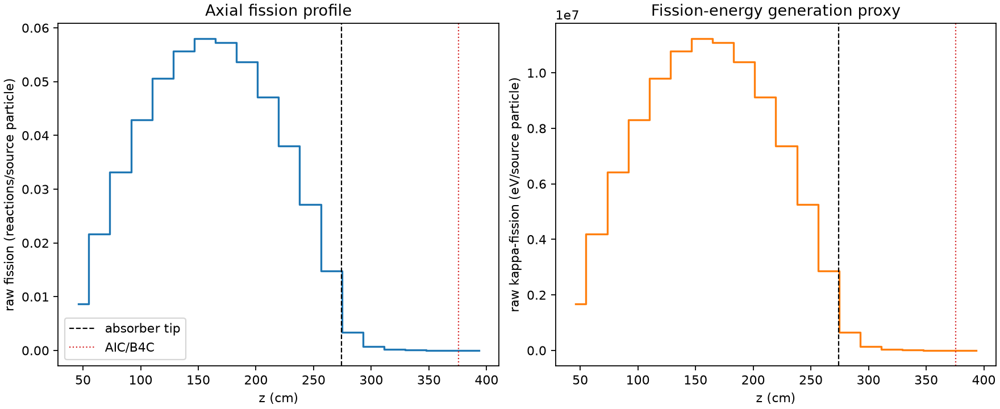
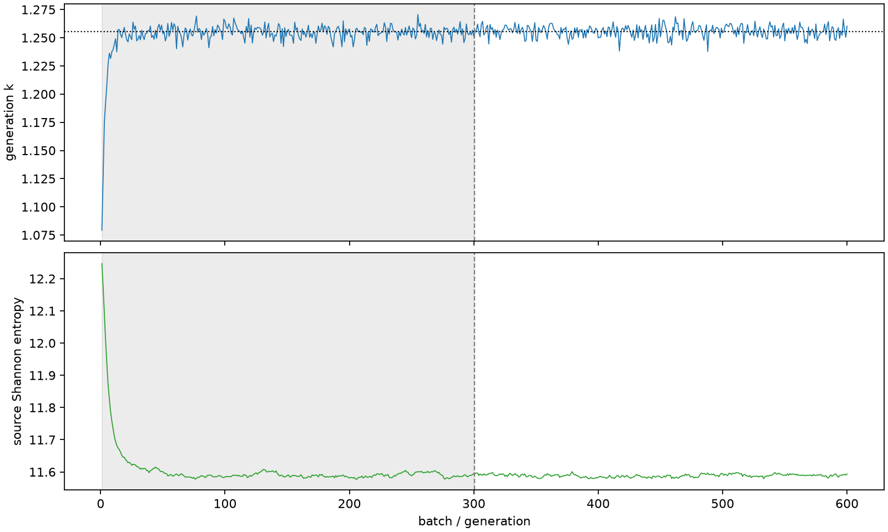

| field | value |
|---|---|
| experiment | V2-STAGE_256_OGRENCI_03-0005 |
| k | 1.25542752088647 |
| MC standard error | 0.0001791248851544802 |
| seconds | 1212.4096503600013 |
| acceptance | not_assessed |
| convergence | review_required |
Completed is output integrity only; physical and statistical review required. Zero tallies do not prove zero production or zero uncertainty.
| diagnostic | value |
|---|---|
| geometric fuel voxels | 5280 |
| zero fission tally voxels | 57 |
| low signal fuel voxels | 1000 |
| low signal fission share | 0.00010107350884141089 |
| low signal kappa share | 0.00010110766346648754 |
| important fission share | 0.9500697896365712 |
| previous filter included | 4280 |
| duration estimate s | 1562.5173488400023 |
| actual minus estimate s | -350.1076984800011 |
| fission relative MC error | statistics |
|---|---|
| all_geometric_fuel | {"voxels": 5280, "positive_mean_voxels": 5223, "zero_mean_voxels": 57, "undefined_relative_error_voxels": 57, "median": 0.010827962913437829, "p95": 0.7786866238877032, "maximum": 1.0000000000000002} |
| low_signal | {"voxels": 1000, "positive_mean_voxels": 943, "zero_mean_voxels": 57, "undefined_relative_error_voxels": 57, "median": 0.5315310410875665, "p95": 1.0, "maximum": 1.0000000000000002} |
| important_95pct | {"voxels": 2941, "positive_mean_voxels": 2941, "zero_mean_voxels": 0, "undefined_relative_error_voxels": 0, "median": 0.007979833837288624, "p95": 0.011734430887083364, "maximum": 0.015159838916298858} |
| outside_previous_filter | {"voxels": 1000, "positive_mean_voxels": 943, "zero_mean_voxels": 57, "undefined_relative_error_voxels": 57, "median": 0.5315310410875665, "p95": 1.0, "maximum": 1.0000000000000002} |
| kappa_fission relative MC error | statistics |
|---|---|
| all_geometric_fuel | {"voxels": 5280, "positive_mean_voxels": 5223, "zero_mean_voxels": 57, "undefined_relative_error_voxels": 57, "median": 0.010816097389733903, "p95": 0.7768977359235228, "maximum": 1.0000000000000002} |
| low_signal | {"voxels": 1000, "positive_mean_voxels": 943, "zero_mean_voxels": 57, "undefined_relative_error_voxels": 57, "median": 0.5302383403776394, "p95": 1.0, "maximum": 1.0000000000000002} |
| important_95pct | {"voxels": 2941, "positive_mean_voxels": 2941, "zero_mean_voxels": 0, "undefined_relative_error_voxels": 0, "median": 0.007971507834678052, "p95": 0.01172189662533189, "maximum": 0.015144068770199031} |
| outside_previous_filter | {"voxels": 1000, "positive_mean_voxels": 943, "zero_mean_voxels": 57, "undefined_relative_error_voxels": 57, "median": 0.5302383403776394, "p95": 1.0, "maximum": 1.0000000000000002} |
| axial bin | fission share | kappa-fission share |
|---|---|---|
| 1 | 0.01691933718467473 | 0.016920053191852184 |
| 2 | 0.042151546512421124 | 0.04215149493832997 |
| 3 | 0.0647193401614006 | 0.06471892662681512 |
| 4 | 0.0835642404548973 | 0.0835640009940785 |
| 5 | 0.09864938982445322 | 0.09864881071431528 |
| 6 | 0.10849583808030501 | 0.10849554756239241 |
| 7 | 0.1130060692716678 | 0.11300546441016517 |
| 8 | 0.11162757400841244 | 0.11162712271993318 |
| 9 | 0.10470085576119403 | 0.10470054172609883 |
| 10 | 0.09196567556385427 | 0.0919653196382892 |
| 11 | 0.07406211643896414 | 0.0740620421937915 |
| 12 | 0.05289788564783172 | 0.05289765378099096 |
| 13 | 0.02883302525859415 | 0.02883320957411141 |
| 14 | 0.006472064295028654 | 0.006474057492009826 |
| 15 | 0.001461302518948323 | 0.001461833286227362 |
| 16 | 0.0003515405326606706 | 0.0003516799212988899 |
| 17 | 9.491785710846417e-05 | 9.494928630488676e-05 |
| 18 | 2.2113372425058183e-05 | 2.2123312960562882e-05 |
| 19 | 4.278716897194004e-06 | 4.279973759508762e-06 |
| 20 | 8.885382612181753e-07 | 8.886562752961896e-07 |
Histories include the inactive-to-active transition at batch 300. kappa-fission approximates fission energy production, not total heat deposition.

